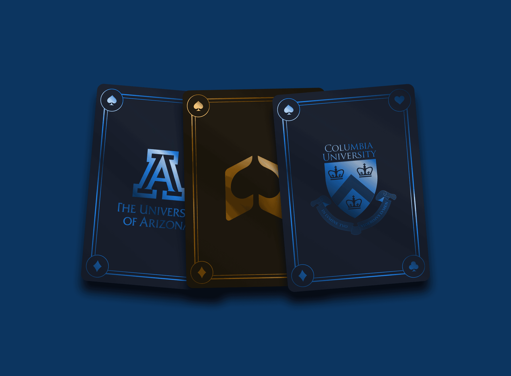
Overview
The Mission
PurePoker set out to be the most trustworthy, modern, and social networking product for games in the world
Millions of Americans play on offshore or illegal poker apps with predatory fees, no oversight, and outdated software. Pure will replace the house with a social network that enables anyone to wager on anything they want, against whoever they want—legal and rake-free—by pairing rigorous compliance with delightful UX.
The Challenge
As the founding designer, I needed to establish a trusted, fintech-grade design system while solving two core product problems: isolated online gameplay and high-friction deposit flows.
My impact
My end-to-end design work helped PurePoker scale from zero to thousands of active beta players
$1M
Secured in pre-seed funding
$3,000,000+
Wagered by thousands of active beta players
$100,000+
Saved for players in rake fees
The Solutions
A social feed for gameplay
Turning raw histories into scannable, attractive highlights
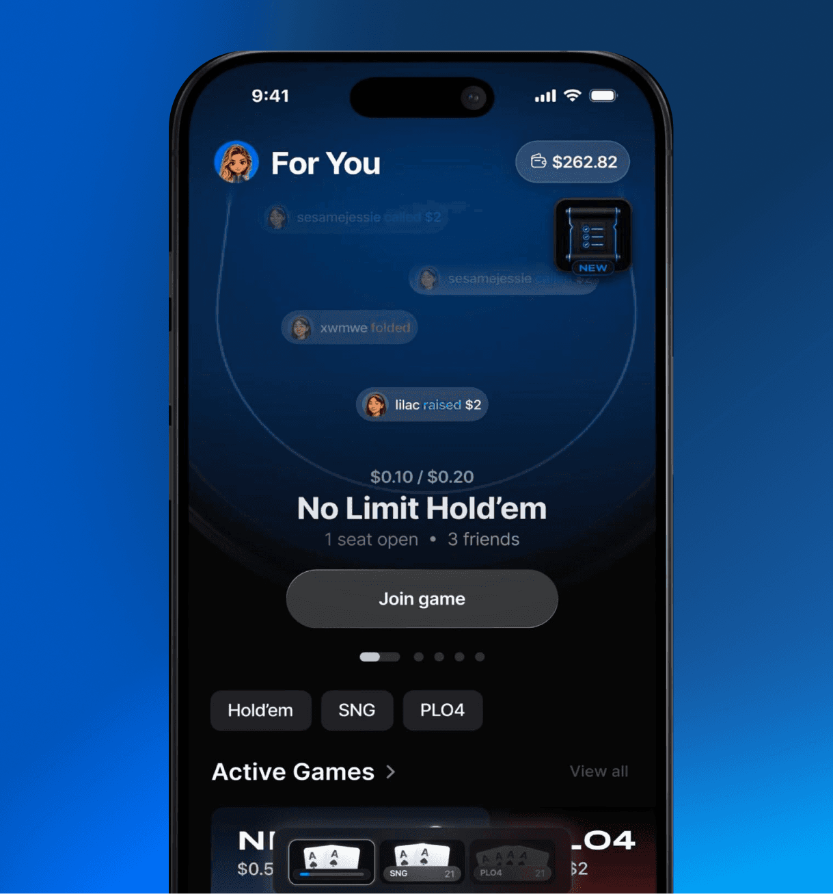
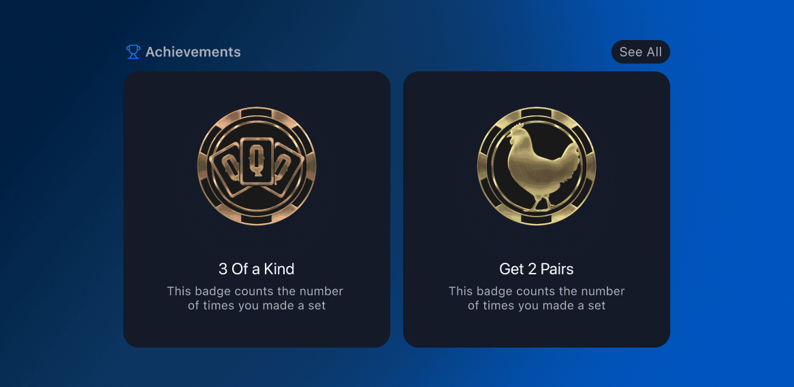
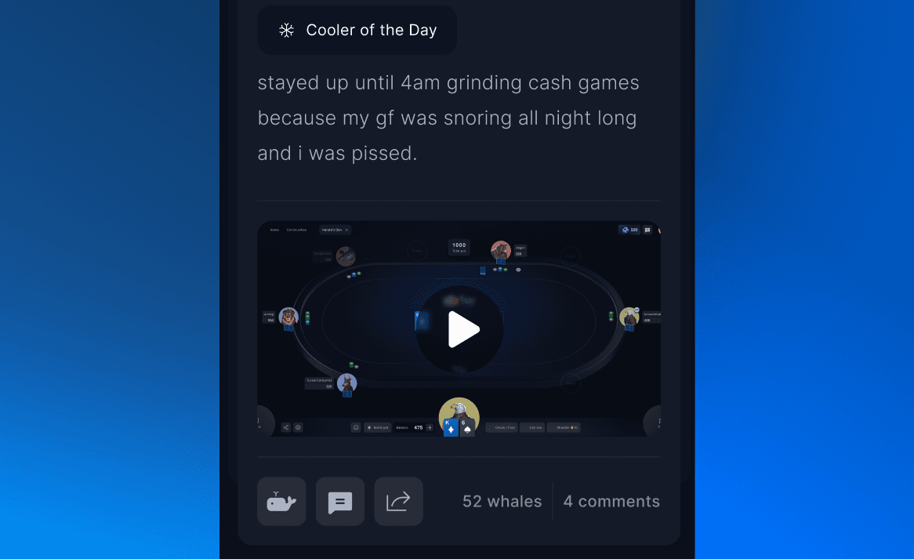
Core flows
Fintech polish for gaming momentum
Inspired by polished banking flows and markets like Kalshi and Robinhood, I used gameplay-forward language, clarified options, elevated primary actions, and added subtle micro-animations for transitions and confirmations. The result feels fast, transparent, and safe.
The Process
An observation
Poker is social in real life. Online, the social layer disappears
Pure set out to build a legal and compliant peers-to-peers game platform. But the product challenge wasn’t about making poker easier to play. Poker players already have a strong social behavior around the games: They celebrate huge wins, argue about bad beats, share crazy hands, talk strategy and relive memorable moments.
Most online poker prospects stop at the table.
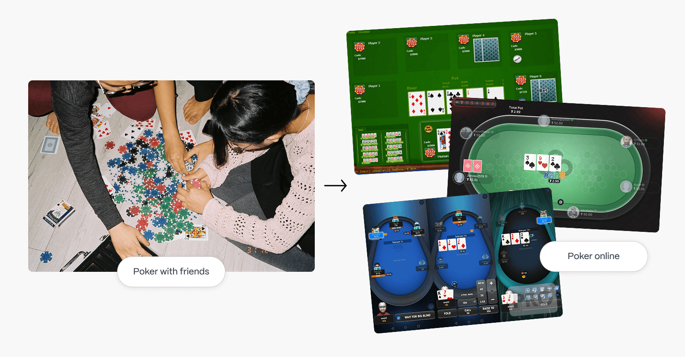
The opportunity
Rethinking two critical journeys legacy platforms fail at
To build the most trustworthy and modern poker product in the world, we had to rethink the most common user journeys. These findings highlighted an opportunity to make the feed not just functional, but celebratory and contagious—something players want to interact with and share.
The Trust Friction
How might we bring high-grade fintech polish to our mobile cashier?
Moving money on gaming apps feels sketchy and tedious, especially on small screens
The Social Void
How might we turn raw gameplay into shareable, contagious content?
Offline poker is highly social, but online poker feels isolated
Defining the MVP
Narrowing down the behaviors
Keeping this in mind, with the founders I defined the P0 scoped around 3 goals:
Increase engagement
Create reasons to return to highlights, social interactions and leaderboards
Create sharable moments
Turn memorable hands to content players want to show other people
Drive acquisition
Make it easy to invite friends and new players into the community
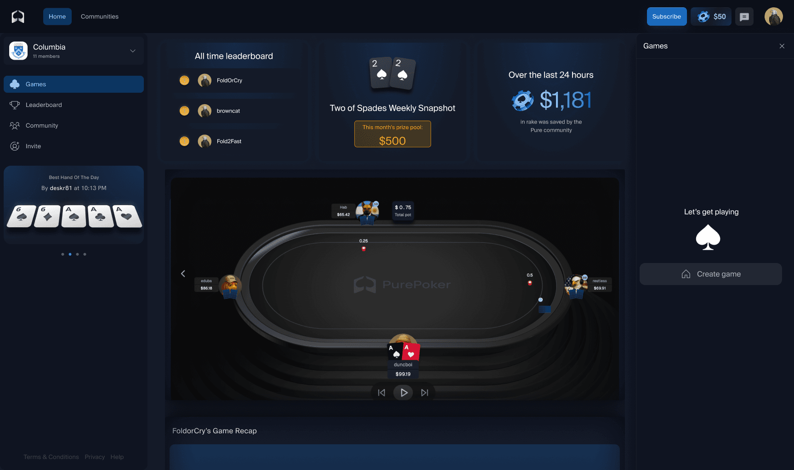
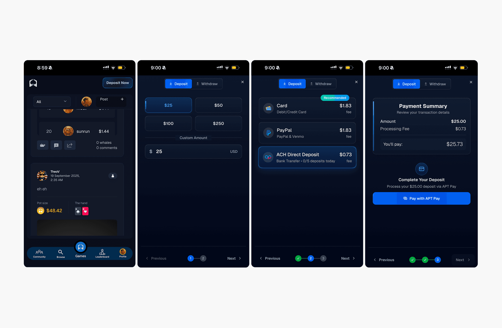
Into the details
Landing on the final solutions
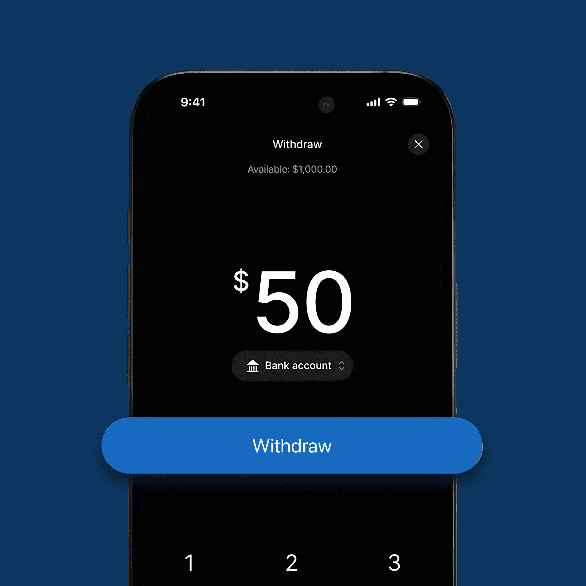
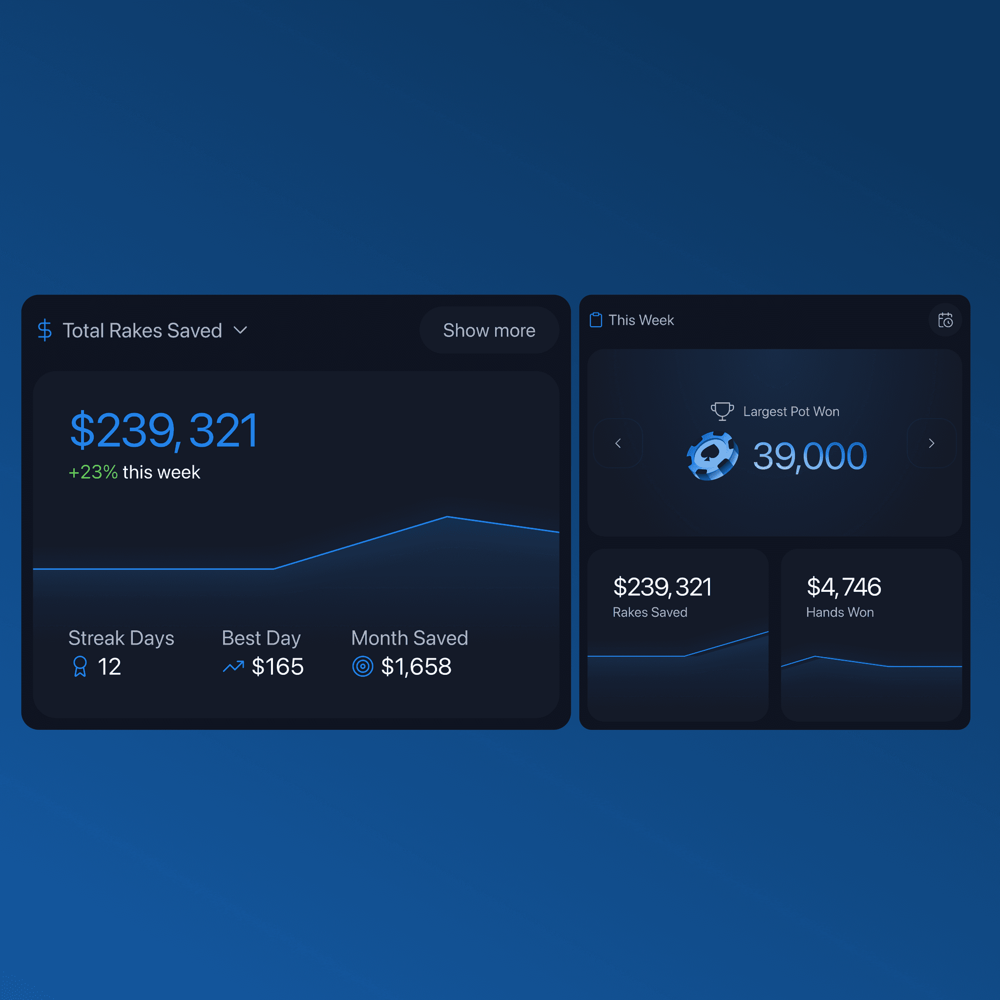
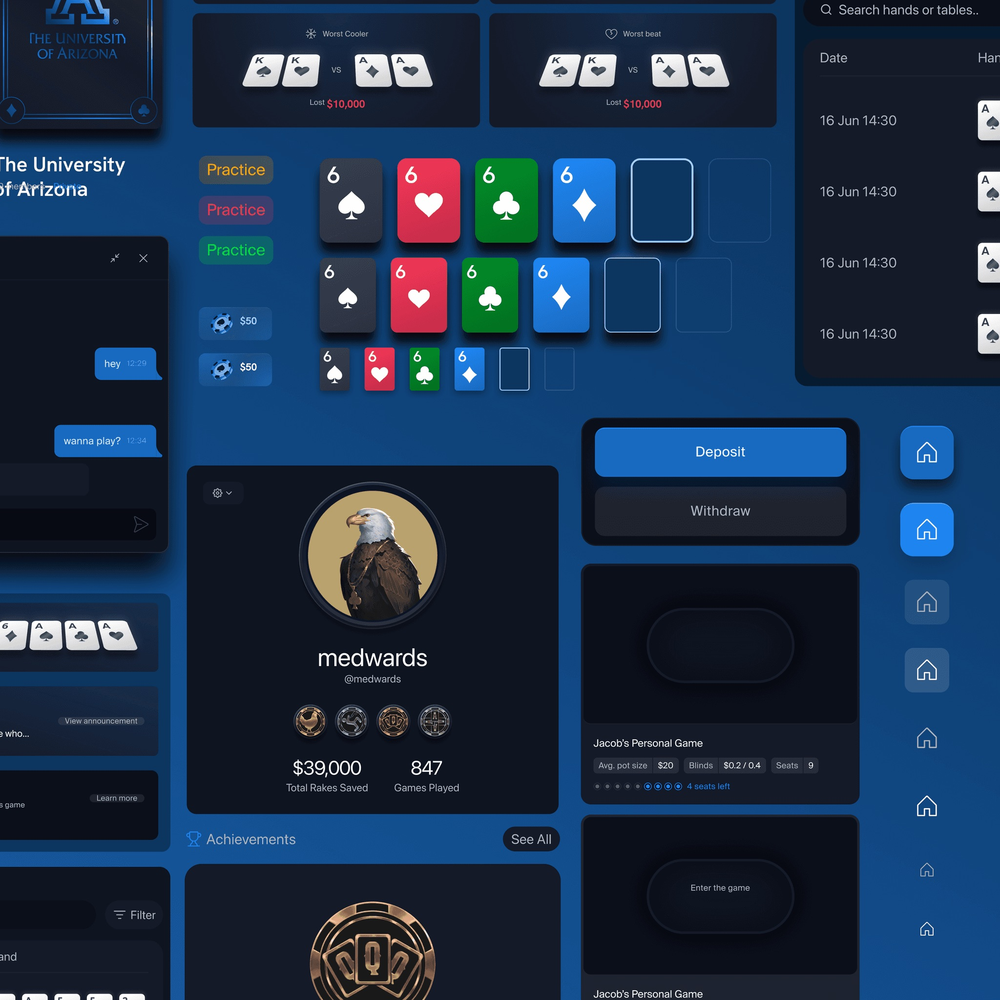
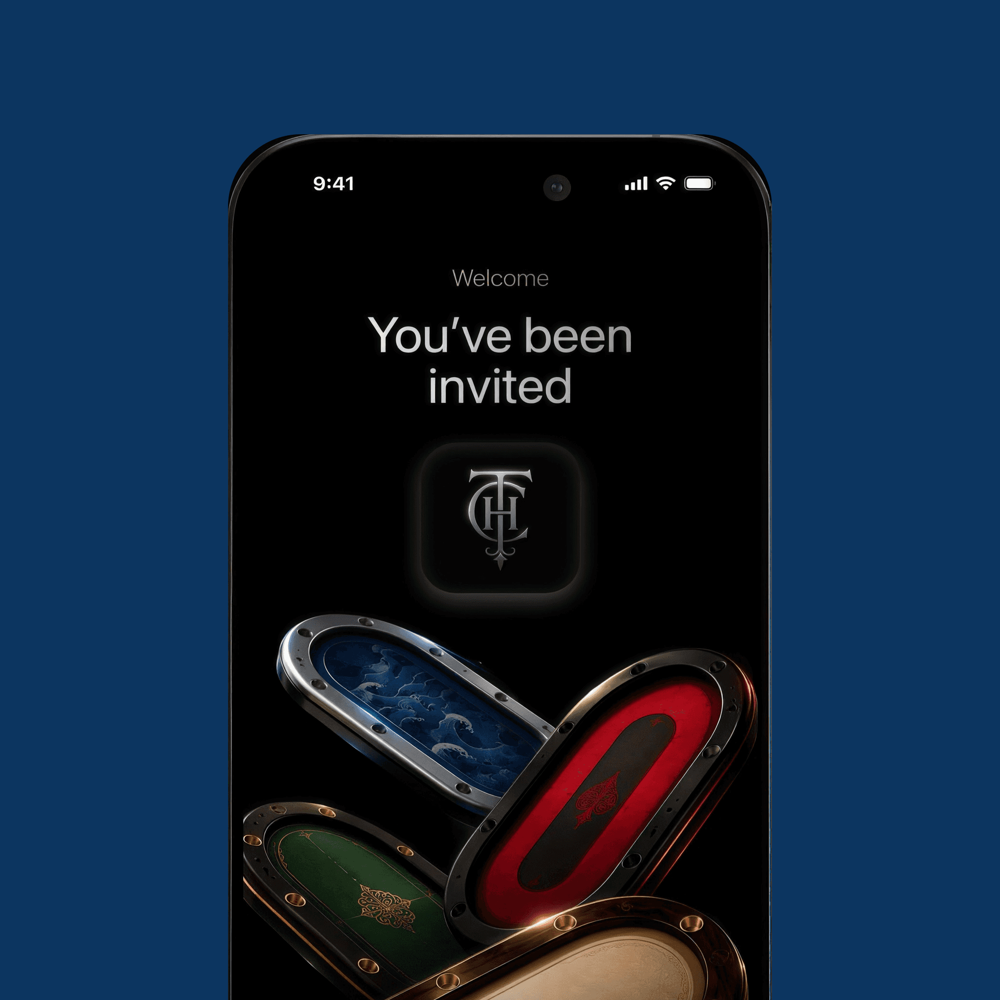
So, what’s next?
Scaling the platform beyond the poker table
With 4.7 stars on the App Store and over 5.5k in downloads, PurePoker launched to an overwhelmingly positive response from the community.
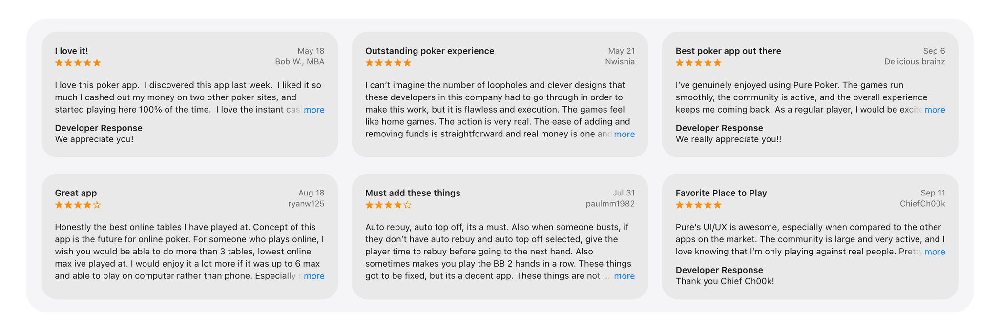
Because we built this ecosystem on strict, reusable system rules, the underlying architecture is highly adaptable. The next phase of Pure is to take this proven, rake-free wagering engine and extend the design system to entirely new formats. Whether that means integrating classic table games, or custom peer-to-peer wagers, the foundation is already set!
Key Takeaways
-
From real-world energy into product mechanics
Capturing the authentic thrill of real-life poker and translating it into digital mobile interactions required deep immersion into player psychology. By mapping these edge cases and establishing strict system rules, I transformed passive, isolated play into a vibrant, retention-driving community.
-
Trust as a competitive advantage
In a market dominated by predatory, outdated offshore apps, trust was our core product feature. By applying fintech-grade transparency to a gaming app, I learned how powerful it is to break the status quo and prove to users that a safer, better experience is possible.
-
Demystifying a niche audience
As my first consumer-facing project, designing for real-money poker felt intimidating at first. However, I quickly realized that poker players are just everyday people! Once I stripped away the gambling jargon, the core challenges were universal UX problems: reducing friction, communicating clearly, and fostering a sense of community.
Next case study
Kino AI